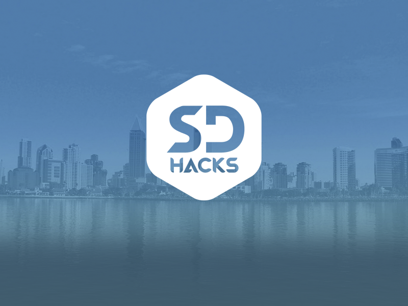

Introduction.
I founded and directed UC San Diego's first intercollegiate hackathon. We raised $300,000 and had over 1200 students attend the event, which we accepted from the pool of approximately 5000 applicants.
The event took about a year of planning and execution, as an event of this size and scale was unprecedented at our university. The infrastructure needed for our event to have the proper insurance, financial accounts, fundraising, and event production took a lot of time to build. As the first in a series of inaugral events, I also had to put a lot of energy in creating a brand and market schema from scratch.
Check out the sdhacks.io website → Process.
When I first decided I wanted to tackle this project, I knew I needed help. I reached out to the Jacob School of Engineering's Corporate Affiliate Program, and the city of San Diego's Economic Development Corporation to talk about the vision for the event. Everyone was very signed on to the idea and was willing to help out. Over the next few months, the idea became more real.
I soon established a student team while trying to keep small and run lean, as many people have suggested is ideal in a startup environment. I directly oversaw about seven individuals that in turn directed smaller teams of a few people each. I would regularly check in with the entire team to make sure progress was moving in the right direction.
I also learned a lot along the way from those that I reached out to. I was mentored by Steve Stoloff (CEO of Vavi) on managing budget sheets, vendor deals, and full event production. Meanwhile, I learned from the engineering school's financial operations office how account creation and business taxation works. Finally, the city's EDC helped bring a lot of perspective on how to properly market in 'official' ways with event press releases, marketing one-pagers, and making killer presentations in front of corporate executives. By the end, we had a tax verified account set up through the university under specific departments for proper attendee insurance; we had a full production need to build out or venue, which included me learning about power supplies, rentals, vendor contracts, and much more; and we had a functional sponsorship pipeline for bringing in the funds needed for the event.
Sponsorship.
Sponsorship was one of the hardest parts of putting the event on. Because of the limited venue locations on and around UCSD's campus, we opted to build our own venue -- which was a $200,000 feat in itself.

After many iterations, we finally ended up with this sponsorship document. With this as our basis, our team was able to secure sponsorship deals for $300,000 from across 28 sponsoring companies.
Event Press.
- thisweek@ucsandiego: Round-the-Clock Hackathon Helps Coders Make Connections, Develop 'Crazy Ideas'
- UCSD Guardian: UCSD Campus Hosts International Hackathon
- San Diego Regional EDC: Student-led Hackathon will funnel tech talent into the region
- Union Tribune: College Hackathon promotes innovation
. . .
If you are interested in reading a more emotional review of the event, I also wrote about my experience on Medium.